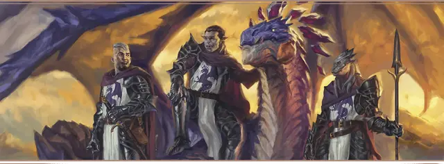

Оруженосец Пурпурного дракона
Purple Dragon Squire

Характеристики Сила, Мудрость, Харизма
Черта Новобранец Пурпурного дракона
Навыки Обращение с животными, Проницательность
Инструменты Инструменты навигатора
Снаряжение Выберите А или Б: (А) Копьё, Инструменты навигатора, Отличная одежда и 9 ЗМ; или (Б) 50 ЗМ
Вы поклялись положить жизнь на защиту Кормира и теперь хотите вступить в орден наилучших воинов королевства, в Рыцари Пурпурного дракона. Вы, однако, должны послужить оруженосцем у рыцаря, прежде чем вступить в их ряды официально. Вы нашли сеньора, готового взять вас к себе и обучить путям Рыцарей; сможете ли вы стать достойным идеалов силы, чести и славы ордена, докажете ли, что достойны стать рыцарем сами?